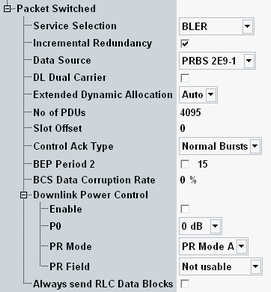

The "Packet Switched" parameters configure the traffic channels for packet switched connections. Set these parameters in accordance with the desired measurement application.

Selects a service mode for the PS connection, e.g. a test mode. See also 3GPP TS 44.014, "Test Modes" and "BLER Measurement".
- "Test Mode A": The MS continuously transmits RLC data blocks containing a pseudo random data sequence. Recommended for TX tests.
- "Test Mode B": The R&S CMW transmits RLC blocks on the downlink containing a pseudo random data sequence; the MS loops back the received data. Recommended for BER tests.
- "BLER": Full signaling involving the RLC layer for block error ratio (BLER) measurements.
- "SRB": EGPRS switched radio block loopback mode for BER tests. The loopback is performed before channel decoding.
Special services are indicated if "Auto Slot Config" / "DTM Config" is selected in the main view, see "Connection Setup"
- Max UL: used for test mode A and data end-to-end - max UL throughput
- Max UL+DL: used for test mode B, SRB connection and data end-to-end - max UL+DL throughput
- Max DL: used for BLER test and data end-to-end - max DL throughput
Enables or disables the incremental redundancy RLC mode for the downlink. This mode is used on EGPRS channels to minimize the number of data blocks that have to be transferred repeatedly (retransmitted) until they can be successfully decoded.
With enabled incremental redundancy, the R&S CMW cyclically changes the puncturing scheme if data blocks must be retransmitted. This setting corresponds to normal operation of the BTS in the network and is suitable for incremental redundancy performance tests specified in 3GPP TS 51.010.
With disabled incremental redundancy, the puncturing scheme is fixed. This setting is suitable for layer 1 receiver tests.
Option R&S CMW-KS210 is required.
Remote command:Selects the data which the R&S CMW transmits on its DL packet data traffic channels (PDTCHs).
- PRBS 2E9-1, PRBS 2E11-1:
PRBS transmission according to CCITT (ITU-T) O.153 - PRBS 2E15-1:
PRBS transmission according to CCITT (ITU-T) O.151 - PRBS 2E16-1:
Transmission of a pseudo random bit sequence defined by the polynomial: x16 + x5 + x3 + x2 + 1
This parameter can be changed in TBF established state.
Option R&S CMW-KS210 is required.
Remote command:Enables or disables the downlink dual carrier mode. In this mode, the R&S CMW uses two radio frequency channels to assign resources to the mobile station; see 3GPP TS 44.060.
Some parameters can be configured individually per carrier. For these parameters, there is a "Carrier 1" and a "Carrier 2" setting, see for example "Channel / Frequency" and "Slot Configuration Dialog".
Option R&S CMW-KS201 required.
Remote command:Extended dynamic allocation is an optional medium access mode of the mobile (see 3GPP TS 44.060). It can be enabled, disabled or automatically enabled if supported by the mobile. In the latter case, the R&S CMW evaluates the GPRS extended dynamic allocation message received during GPRS attach to determine whether the mobile supports extended dynamic allocation or not.
Remote command:Number of protocol data units (PDU) that the MS is to transmit in the uplink during GPRS test mode A.
If supported by the mobile, a value of 0 can be used to request an infinite test that is not terminated by the mobile after a certain number of PDUs.
Remote command:Timeslot that is to be taken as the first DL timeslot when the MS is in multi-slots operation (downlink timeslot offset parameter in the GPRS_TEST_MODE_CMD).
When the mobile loops back data, the slot offset determines which DL slot is looped to which UL slot. An offset of 0 indicates that a DL slot is looped to the UL slot with the same slot number.
Remote command:Specifies whether a mobile sends the PACKET CONTROL ACKNOWLEDGEMENT (3GPP TS 44.060) as four access bursts or as an RLC/MAC packet control acknowledgement control message with four normal bursts.
The "Access Bursts" setting can be used to analyze access bursts while a packet data connection is active. The bursts can be analyzed using the GSM multi-evaluation measurement (option R&S CMW-KM200).
Remote command:Configures the BEP_PERIOD2 specified in 3GPP TS 45.008, section 10.2.3.2.1.
The BEP period 2 is a filter constant for EGPRS measurement reports that the MS uses for the calculation of the mean BEP and the CV BEP values. BEP_PERIOD2 is sent to the MS via PACCH.
Remote command:Specifies the volume of corrupted data the R&S CMW generates. Measurement results evaluate whether the MS reports the corrupted data correctly (see "PS BLER Tab").
Option R&S CMW-KS210 is required.
Remote command:Configures the downlink power control for the packet switched connections. For details, refer to 3GPP TS 45.008 and 3GPP TS 44.060.
Enables/disables the downlink power control for packet data transfer.
Remote command:Defines the downlink power control parameter P0, which denotes a power reduction relative to BCCH.
Remote command:Defines the mode of the power reduction.
- Mode A: power control specific to a particular MS in the network
- Mode B: power control for all MSs with a TBF established on the same PDCH
Indicates the power level reduction of the current RLC block relative to BCCH - P0.
Remote command:Commands the MS to transmit dummy data blocks when there are no RLC data blocks to be sent.
Remote command: